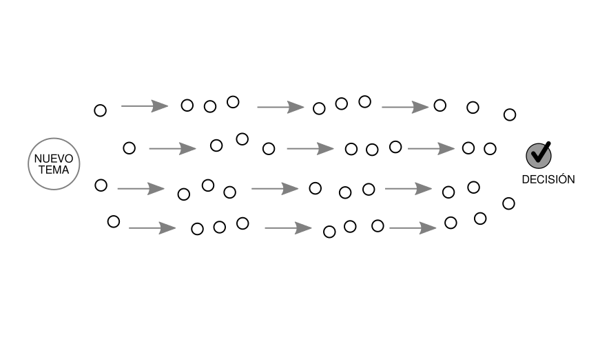
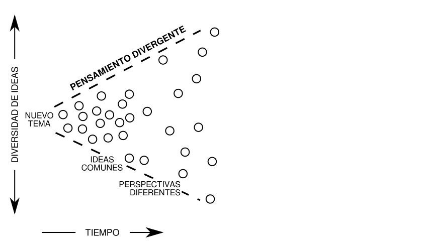
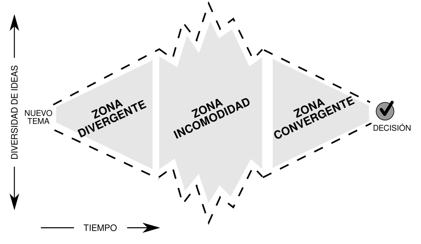

Toma de decisiones
Influencia Social y Grupos
Juan Muñoz
Universitat Autònoma de Barcelona
http:/juan.psicologiasocial.eu

Toma de decisiones
¿Son las decisiones grupales mejores que las que se toman de manera individual?
Los grupos tienen mejor desempeño…
- Aparecen ideas y estrategias que difícilmente podrían haberse dado a nivel individual.
- Facilitan la generación de ideas y alternativas y la posibilidad de detectar errores o incorrecciones, así como de recordar más cantidad de información.
- Propician un contexto cooperativo de trabajo que hace aumentar la cohesión, la motivación y la implicación..
Ventajas y desventajas
- Ventajas
- Mayor concentración de conocimientos, ideas, experiencias e información.
- Variedad de puntos de vista, más estrategias y alternativas.
- Decisiones más complejas.
- Propicia un contexto que aumenta cohesión, motivación e implicación
- Desventajas
- Mayor dedicación de tiempo.
- Minorías vs mayorías y presiones a la uniformidad
- Manipulación del compromiso para llegar a una decisión más rápidamente.
- Propósitos ocultos (!) que influyen en la opinión
…pero
(…) en tal caso, se supone que cada uno de los participantes es un individuo racional y moral. Juntos no hacen sino sopesar las ventajas e inconvenientes de cada solución. Para elegir, en definitiva, la que presente las mayores ventajas y los menores inconvenientes.
Doise y Moscovici, 1984
Desplazamiento hacia el riesgo

Desplazamiento: Explicaciones
- Difusión de responsabilidad
- Riesgo como valor cultural
- Las personas arriesgadas son más influyentes
Polarización

Polarización: Explicaciones
- Influencia normativa
- Influencia informativa
- Autocategorización
Dinámica de la toma de decisiones en grupo

Kaner, S. (2014). Facilitator’s guide to participatory decision-making






Mejorar las decisiones
- Las diferencias de opinión son naturales y previsibles. Debemos buscarlas y provocarlas fomentando la participación en el trabajo de discusión y decisión.
- Los desacuerdos ayudan al grupo a tomar su decisión, ya que al intervenir una mayor gama de juicios y opiniones, aumentan las probabilidades de encontrar argumentos nuevos y soluciones válidas en las que no se pensaba en un principio.
- Evitar hacer concesiones únicamente para evitar el conflicto y lograr el acuerdo y la armonía.
- Deben abolirse las técnicas que reducen el conflicto.
- Hacer todo lo posible para que toda persona defienda su punto de vista con firmeza.